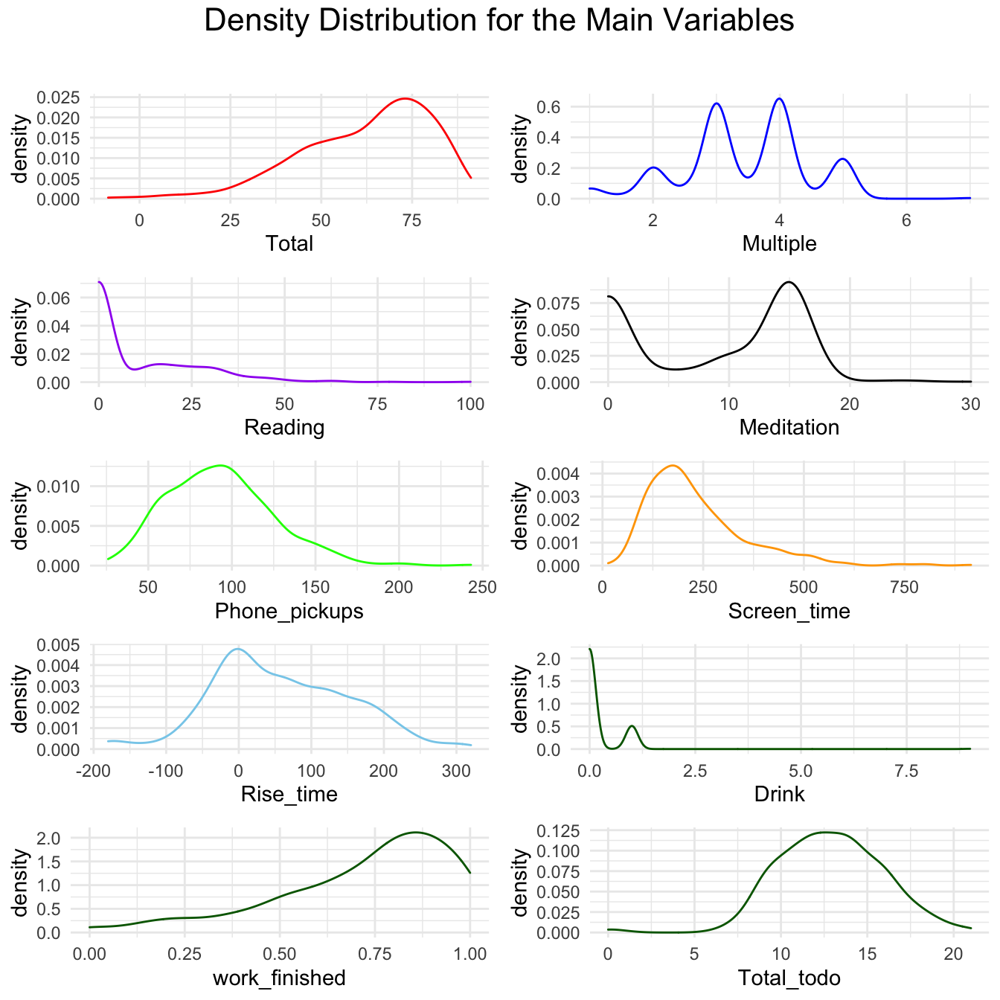
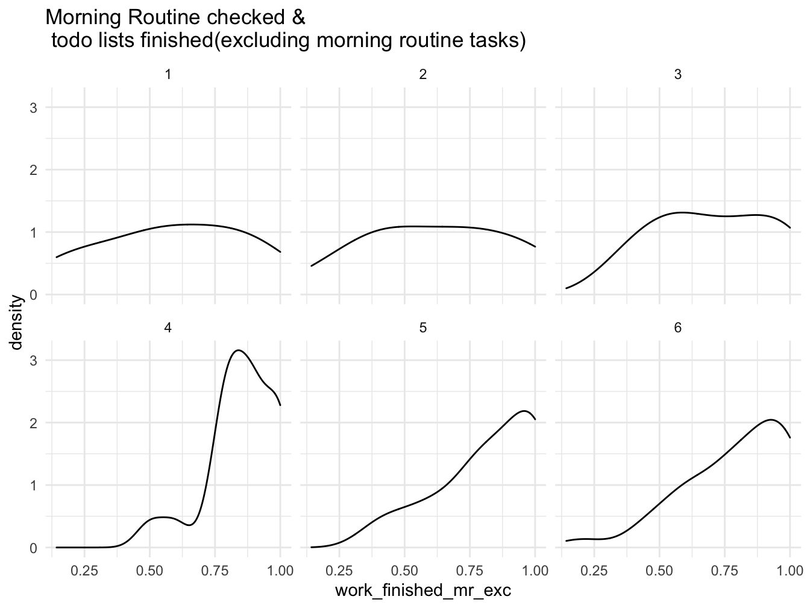
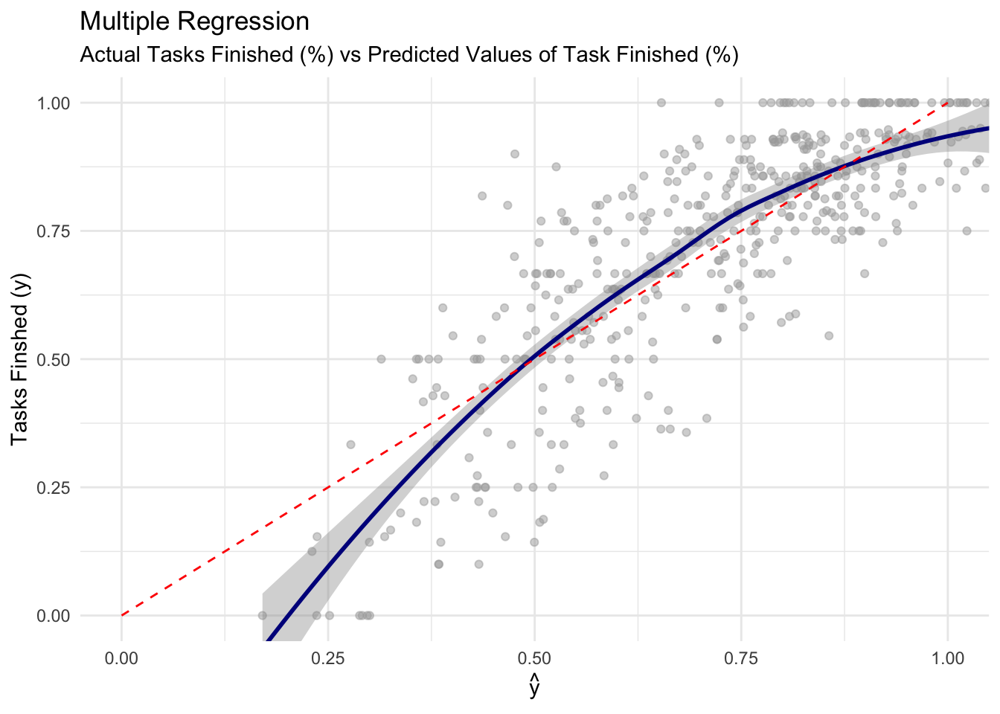

Self Evaluation Project
Andy
3/15/2022
library(lubridate)##
## Attaching package: 'lubridate'## The following objects are masked from 'package:base':
##
## date, intersect, setdiff, unionlibrary(gridExtra)
library(tidyverse)## ── Attaching packages ─────────────────────────────────────── tidyverse 1.3.1 ──## ✓ ggplot2 3.3.5 ✓ purrr 0.3.4
## ✓ tibble 3.1.6 ✓ dplyr 1.0.7
## ✓ tidyr 1.1.4 ✓ stringr 1.4.0
## ✓ readr 2.1.1 ✓ forcats 0.5.1## ── Conflicts ────────────────────────────────────────── tidyverse_conflicts() ──
## x lubridate::as.difftime() masks base::as.difftime()
## x dplyr::combine() masks gridExtra::combine()
## x lubridate::date() masks base::date()
## x dplyr::filter() masks stats::filter()
## x lubridate::intersect() masks base::intersect()
## x dplyr::lag() masks stats::lag()
## x lubridate::setdiff() masks base::setdiff()
## x lubridate::union() masks base::union()library(margins)
library(psych)##
## Attaching package: 'psych'## The following objects are masked from 'package:ggplot2':
##
## %+%, alphaRead Data & Manipulation
all_dat = read.csv('/Volumes/Programming/Spring 2022/project/all_dat.csv')
# all_dat = read.csv('D:/Spring 2022/Project/all_dat.csv')
morning_rt = read.csv('/Volumes/Programming/Spring 2022/Project/morning_routine.csv')
colnames(all_dat) <- c('X', 'Name','Finished','Multiple','Phone_pickups',
'Screen_time','Created','Date','Drink','Key_words',
'Meditation','Mentality','Satisfaction',
'Reading','Productivity','Rise_time','Run','Social',
'Tech','Total','Total_todo','Work_done')
# Remove unnecessary columns & Modify some columns #new
all_dat <- all_dat %>%
dplyr::select(Date, everything(), Finished, Total_todo,-X,-Name,-Created, - Work_done) %>%
dplyr::mutate(work_finished = round(Finished/Total_todo,4),
Drink = lag(Drink),
Total = Total*100)%>%
tibble()
# Same for morning routine #new
morning_rt <- morning_rt %>%
dplyr::mutate(Date = strptime(as.character(morning_rt$Date), "%m/%d/%Y"),
Date = format(Date, "%m/%d/%Y"),
morning_phone = rise_time_check, # modify column name
night_phone = before_sleep_check) %>%
dplyr::select(Date, everything(), -c(X, level_0, index,
rise_time_check, before_sleep_check)) %>%
tibble()
# merge morning_rt with all_dat
all_morning_rt <- merge(morning_rt, all_dat,by="Date", all.x=T) %>%
dplyr::mutate(Date = mdy(Date),
work_finished_mr_exc =
round((Finished-total_checked)/(Total_todo-6),4)) %>%
# work_finished_mr_exc: this variable excludes morning routine
# tasks for more accurate statistical analysis.
dplyr::select(-c(rise_time_min)) %>% # redundant
dplyr::filter(work_finished_mr_exc <= 1 & work_finished_mr_exc >0) %>%
arrange(desc(Date))
# Drop Name & Created column
dat_date = filter(all_dat, Date!=0) # Exclude wrong date format
# Only include multiple-related(social, tech, satisfaction, overall, etc)
# Multiple data length: 53
multiple_dat = filter(all_dat, Productivity!=0)Distribution for the main variables
p1 <- ggplot(data = all_dat, alpha=.5) +
geom_density( aes(Total), color = 'red')
p2 <- ggplot(data = all_dat) +
geom_density( aes(Multiple), color = 'blue')
p3 <- ggplot(data = all_dat, alpha=.5)+
geom_density( aes(Reading), color = 'purple')
p4 <-ggplot(data = all_dat, alpha=.5)+
geom_density(aes(Meditation), color = 'black')
p5 <- ggplot(data = all_dat, alpha=.5)+
geom_density(aes(Phone_pickups), color = 'green')
p6 <- ggplot(data = all_dat, alpha=.5)+
geom_density(aes(Screen_time), color = 'orange')
p7 <- ggplot(data = all_dat, alpha=.5)+
geom_density(aes(Rise_time), color = 'skyblue')
p8 <- ggplot(data = all_dat, alpha=.5)+
geom_density(aes(Drink), color = 'darkgreen')
p9 <- ggplot(data = all_dat, alpha=.5)+
geom_density(aes(work_finished), color = 'darkgreen')
p10 <- ggplot(data = all_dat, alpha=.5)+
geom_density(aes(Phone_pickups), color = 'darkgreen')
grid.arrange(p1, p2, p3,p4,p5,p6,p7,p8,p9,p10, nrow = 5)
How do these variables affect the outcome of the day?
Find the relationships between these variables and how they affect my lifestyle
We will first take a look at the characteristics of the variables by utilizing descriptive statistics.
- Use pairs.panels function in psych module
- The diagonal histograms demonstrates the distribution of each variable
- The bottom left triangle represents a scatter plot with the best fit line
- The top right triangle represents a correlation coefficient for each pair, which ranges from -1 to 1
- If the coefficient is close to 1, it means that the pair holds a positive relationship and a negative relationship for -1.
- Correlation Coefficient Formula:
correlation_plot <- all_dat %>%
select(c(Screen_time, Meditation, Multiple, Rise_time,
Reading,Phone_pickups, work_finished, Total))
pairs.panels(correlation_plot, lm = TRUE)
Single Regression Function: \(y=\alpha+\beta x\)
- Set:
- y =
- x =
- \(\alpha\) = y-intercept
- \(\beta\) = slope
- Finds fitted line(\(\alpha\) & \(\beta\)) by using the least-square method
- Least-square: by summing up the residual squares for different curves, it finds the “least squared” curve that best fit the data.
- Outputs \(R^2\), p-value and other meaningful calculations
- \(R^2\): It demonstrates how accurate the fitted line is to the data
- Formula: \(R^2 = \dfrac{Var(mean)-Var(fit)}{Var(min)}\)
- Ex: If we get.8, it means that \(x\) explains 60% of the variation in \(y\)
How important is my Morning Routine?
Test how many checked morning routines affect the outcome of the day
- The morning routine tasks:
- Not touching my phone for at least 30 minutes the night before
- Not touching my phone for an hour after I wake up
- Exercise
- Meditation
- Reading
- Morning journal
# see how number of morning routine checks affects the Total %
ggplot(filter(all_morning_rt, total_checked != 0)) +
geom_density(aes(Total))+
facet_wrap(~total_checked)+
labs(title = "Morning Routine checked & \nTotal %")
# see how number of morning routine checks affects the total todo lists checked
ggplot(filter(all_morning_rt, total_checked != 0)) +
geom_density(aes(work_finished_mr_exc))+
facet_wrap(~total_checked)+
labs(title = "Morning Routine checked & \n todo lists finished(excluding morning routine tasks)")
Logistic Regression
Single Logistic Regression
model_logit <- glm(work_finished_mr_exc ~ night_phone,
data = all_morning_rt, family = binomial(link = "logit"))
m = margins(model_logit)
ame_result = summary(m)
ame_result## factor AME SE z p lower upper
## night_phone 0.1911 0.0879 2.1732 0.0298 0.0187 0.3635How to interpret the Average Marginal Effect(AME) values
- Interpret them as percentage points rather than percentage
- work_finished .1911 : Indicates that if I do not touch my phone the night before, I am 19.06 percentage point more likely to get more tasks done.
ggplot(data = ame_result) +
geom_point(aes(factor , AME)) +
geom_errorbar(aes(x = factor, ymin = lower, ymax = upper),
width = .5) + geom_hline ( yintercept = 0) +
theme_minimal ( ) +
theme(axis.text.x = element_text(angle = 90))
Meditation with all_dat
##
## Call:
## lm(formula = Meditation ~ Multiple + Phone_pickups + Screen_time +
## Drink + Reading + Rise_time + Total_todo + Total + work_finished,
## data = all_dat)
##
## Residuals:
## Min 1Q Median 3Q Max
## -11.459 -2.760 0.311 2.728 14.724
##
## Coefficients:
## Estimate Std. Error t value Pr(>|t|)
## (Intercept) -28.129695 2.173844 -12.940 < 2e-16 ***
## Multiple -1.790261 0.295849 -6.051 3.00e-09 ***
## Phone_pickups 0.056601 0.007457 7.590 1.81e-13 ***
## Screen_time 0.011639 0.002060 5.650 2.83e-08 ***
## Drink 0.371762 0.366816 1.013 0.311
## Reading -0.094780 0.015920 -5.953 5.24e-09 ***
## Rise_time 0.046618 0.003771 12.361 < 2e-16 ***
## Total_todo -0.124933 0.078016 -1.601 0.110
## Total 0.706743 0.039584 17.854 < 2e-16 ***
## work_finished -13.535582 2.139523 -6.326 5.99e-10 ***
## ---
## Signif. codes: 0 '***' 0.001 '**' 0.01 '*' 0.05 '.' 0.1 ' ' 1
##
## Residual standard error: 4.27 on 457 degrees of freedom
## (4 observations deleted due to missingness)
## Multiple R-squared: 0.6435, Adjusted R-squared: 0.6365
## F-statistic: 91.65 on 9 and 457 DF, p-value: < 2.2e-16Multiple with multiple_dat
- Multiple data length: 50 +
multiple_tail <- lm(Multiple ~ Phone_pickups+ Screen_time+ Drink+ Meditation+
Reading+ Rise_time+ Total_todo +
work_finished + Total,
data = multiple_dat)
summary(multiple_tail)##
## Call:
## lm(formula = Multiple ~ Phone_pickups + Screen_time + Drink +
## Meditation + Reading + Rise_time + Total_todo + work_finished +
## Total, data = multiple_dat)
##
## Residuals:
## Min 1Q Median 3Q Max
## -0.96096 -0.30544 0.00831 0.31609 1.11328
##
## Coefficients:
## Estimate Std. Error t value Pr(>|t|)
## (Intercept) 1.1141965 0.8342000 1.336 0.18640
## Phone_pickups 0.0033614 0.0025671 1.309 0.19508
## Screen_time -0.0014649 0.0007427 -1.972 0.05288 .
## Drink 0.0136914 0.1597639 0.086 0.93197
## Meditation -0.0171165 0.0165402 -1.035 0.30464
## Reading -0.0061274 0.0091509 -0.670 0.50552
## Rise_time 0.0031625 0.0016424 1.926 0.05860 .
## Total_todo -0.0206266 0.0245675 -0.840 0.40426
## work_finished 2.2706056 0.8277484 2.743 0.00789 **
## Total 0.0159587 0.0175451 0.910 0.36646
## ---
## Signif. codes: 0 '***' 0.001 '**' 0.01 '*' 0.05 '.' 0.1 ' ' 1
##
## Residual standard error: 0.4992 on 64 degrees of freedom
## Multiple R-squared: 0.7608, Adjusted R-squared: 0.7271
## F-statistic: 22.61 on 9 and 64 DF, p-value: < 2.2e-16Multiple with all_dat
- Multiple data length: 450 +
# Multiple data all
multiple_all <- lm(Multiple ~ Phone_pickups+ Screen_time+ Drink+ Meditation+
Reading+ Rise_time+ Run + Total_todo + Total ,
data = all_dat)
summary(multiple_all)##
## Call:
## lm(formula = Multiple ~ Phone_pickups + Screen_time + Drink +
## Meditation + Reading + Rise_time + Run + Total_todo + Total,
## data = all_dat)
##
## Residuals:
## Min 1Q Median 3Q Max
## -2.4463 -0.4167 -0.0241 0.4231 1.9660
##
## Coefficients:
## Estimate Std. Error t value Pr(>|t|)
## (Intercept) -0.1386551 0.3250977 -0.427 0.669941
## Phone_pickups 0.0042469 0.0010951 3.878 0.000121 ***
## Screen_time -0.0005883 0.0003006 -1.957 0.050957 .
## Drink -0.0305183 0.0549614 -0.555 0.578981
## Meditation -0.0437303 0.0064611 -6.768 3.98e-11 ***
## Reading -0.0104642 0.0023650 -4.425 1.21e-05 ***
## Rise_time 0.0036442 0.0004941 7.376 7.69e-13 ***
## Run 0.6946964 0.2600047 2.672 0.007811 **
## Total_todo -0.0146155 0.0113335 -1.290 0.197842
## Total 0.0602126 0.0040335 14.928 < 2e-16 ***
## ---
## Signif. codes: 0 '***' 0.001 '**' 0.01 '*' 0.05 '.' 0.1 ' ' 1
##
## Residual standard error: 0.6475 on 460 degrees of freedom
## (1 observation deleted due to missingness)
## Multiple R-squared: 0.5676, Adjusted R-squared: 0.5591
## F-statistic: 67.09 on 9 and 460 DF, p-value: < 2.2e-16Linear Regression Summary for Work_done (all_dat)
#################### Linear Regression Work_done (all_dat) #####################
# Work done
work_finished_all <- lm(work_finished ~ Multiple + Phone_pickups + Screen_time +
Drink + Meditation + Reading + Rise_time + Run +
Total_todo,
data = all_dat)
summary(work_finished_all)##
## Call:
## lm(formula = work_finished ~ Multiple + Phone_pickups + Screen_time +
## Drink + Meditation + Reading + Rise_time + Run + Total_todo,
## data = all_dat)
##
## Residuals:
## Min 1Q Median 3Q Max
## -0.36590 -0.09006 0.00740 0.09573 0.42401
##
## Coefficients:
## Estimate Std. Error t value Pr(>|t|)
## (Intercept) 1.489e-01 5.694e-02 2.615 0.00922 **
## Multiple 1.087e-01 8.420e-03 12.911 < 2e-16 ***
## Phone_pickups 2.360e-04 2.348e-04 1.005 0.31542
## Screen_time -1.668e-05 6.222e-05 -0.268 0.78874
## Drink -5.377e-02 1.191e-02 -4.514 8.11e-06 ***
## Meditation 1.126e-02 1.068e-03 10.535 < 2e-16 ***
## Reading 2.378e-03 4.580e-04 5.192 3.15e-07 ***
## Rise_time -1.611e-04 8.028e-05 -2.007 0.04534 *
## Run -8.212e-02 5.730e-02 -1.433 0.15248
## Total_todo 6.307e-03 2.513e-03 2.510 0.01241 *
## ---
## Signif. codes: 0 '***' 0.001 '**' 0.01 '*' 0.05 '.' 0.1 ' ' 1
##
## Residual standard error: 0.1416 on 457 degrees of freedom
## (4 observations deleted due to missingness)
## Multiple R-squared: 0.6419, Adjusted R-squared: 0.6348
## F-statistic: 91.01 on 9 and 457 DF, p-value: < 2.2e-16Actual vs Prediction Visualization for Work_done (all_dat)
all_dat$pred_work_finished <- predict(work_finished_all, newdata = all_dat)
# Explanatory variable: work_finished
ggplot(data = all_dat, aes(x = pred_work_finished, y = work_finished)) +
geom_point(alpha = 0.5, color = "darkgray") +
geom_smooth(color = "darkblue") +
geom_line(aes(x = work_finished,
y = work_finished), # Plotting the line, y = x
color = "red", linetype = 2) +
coord_cartesian( xlim = c(0, 1),
ylim = c(0, 1) ) # Limits the range of the## `geom_smooth()` using method = 'loess' and formula 'y ~ x'
Actual vs Prediction Residual Visualization for Work_done (all_dat)
# graph for legibility# Plot of residual error as a function of prediction
ggplot(data = all_dat, aes(x = pred_work_finished,
y = pred_work_finished - work_finished)) +
geom_point(alpha = 0.2, color = "darkgray") +
geom_smooth(color = "darkblue") +
geom_line(aes(x = pred_work_finished,
y = 0), # Plotting the line, y = 0
color = "red", linetype = 2) +
ylab("residual error (prediction - actual)")## `geom_smooth()` using method = 'loess' and formula 'y ~ x'
Testing Normality
library(dplyr)
set.seed(1234)
dplyr::sample_n(all_dat, 10)## # A tibble: 10 × 20
## Date Finished Multiple Phone_pickups Screen_time Drink Key_words Meditation
## <chr> <dbl> <dbl> <dbl> <dbl> <dbl> <chr> <dbl>
## 1 08/11… 5 3 144 167 0 0 0
## 2 10/17… 15 3 123 200 0 0 14
## 3 01/10… 10 3.6 98 84 0 0 15
## 4 1/12/… 9 3 74 304 0 0 15
## 5 1/31/… 4 3 61 440 0 0 0
## 6 12/21… 8 3.6 107 314 0 0 0
## 7 02/20… 15 4 97 132 0 0 15
## 8 01/26… 10 4 126 149 0 0 15
## 9 01/03… 5 2.6 80 308 0 0 10
## 10 12/16… 8 3.4 97 201 0 0 15
## # … with 12 more variables: Mentality <dbl>, Satisfaction <dbl>, Reading <dbl>,
## # Productivity <dbl>, Rise_time <dbl>, Run <dbl>, Social <dbl>, Tech <dbl>,
## # Total <dbl>, Total_todo <dbl>, work_finished <dbl>,
## # pred_work_finished <dbl># The central limit theorem tells us that no matter what distribution things
# have, the sampling distribution tends to be normal if the sample is large
# enough (n > 30).
# The R function shapiro.test() can be used to perform the Shapiro-Wilk test
# of normality for one variable (univariate):
shapiro.test(all_dat$Total)##
## Shapiro-Wilk normality test
##
## data: all_dat$Total
## W = 0.94554, p-value = 3.89e-12Determining Distributions
- Multiple(fit.normal)
library(fitdistrplus)## Loading required package: MASS##
## Attaching package: 'MASS'## The following object is masked from 'package:dplyr':
##
## select## Loading required package: survivallibrary(logspline)
# The kurtosis and squared skewness of your sample is plotted as a blue point
# named "Observation".
descdist(all_dat$Multiple, discrete = FALSE)
## summary statistics
## ------
## min: 1 max: 7
## median: 3.4
## mean: 3.438217
## estimated sd: 0.9878755
## estimated skewness: -0.2546991
## estimated kurtosis: 3.068103descdist(all_dat$Screen_time, discrete = FALSE)
## summary statistics
## ------
## min: 14 max: 915
## median: 202
## mean: 234.3715
## estimated sd: 127.0298
## estimated skewness: 1.568781
## estimated kurtosis: 6.666055wf <- c(na.omit(all_dat$work_finished))
descdist(wf, discrete = FALSE)
## summary statistics
## ------
## min: 0 max: 1
## median: 0.7778
## mean: 0.7192017
## estimated sd: 0.2341472
## estimated skewness: -1.061836
## estimated kurtosis: 3.617536#fit.beta <- fitdist(wf, 'beta', method = "mme")
# method = "mme": Moment matching estimation consists in equalizing theoretical
# and empirical moments.
#fit.gamma <- fitdist(all_dat$Screen_time, "gamma")
fit.normal <- fitdist(all_dat$Multiple, "norm")
#plot(fit.beta)
#plot(fit.gamma)
plot(fit.normal)